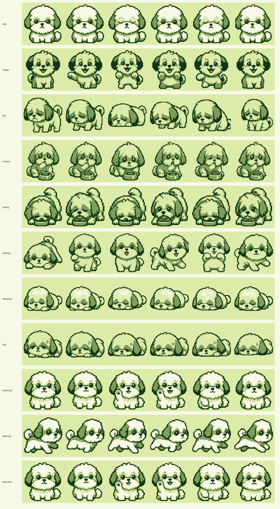

Bao
Shih tzu desk companion
Sweet, calm, snack-curious, and quick to ask for attention.

Preferred foods
steamed bun, rice ball, kibble bowl, chicken bite, apple slice
steamed bun, rice ball, kibble bowl, chicken bite, apple slice
Species food ids
Animations
idle, happy, sad, hungry, eating, playing, sleeping, sick, cleaning, walking, attention
idle, happy, sad, hungry, eating, playing, sleeping, sick, cleaning, walking, attention
Palette
#f7f8e7, #dceca8, #7d9d58, #123716
#f7f8e7, #dceca8, #7d9d58, #123716